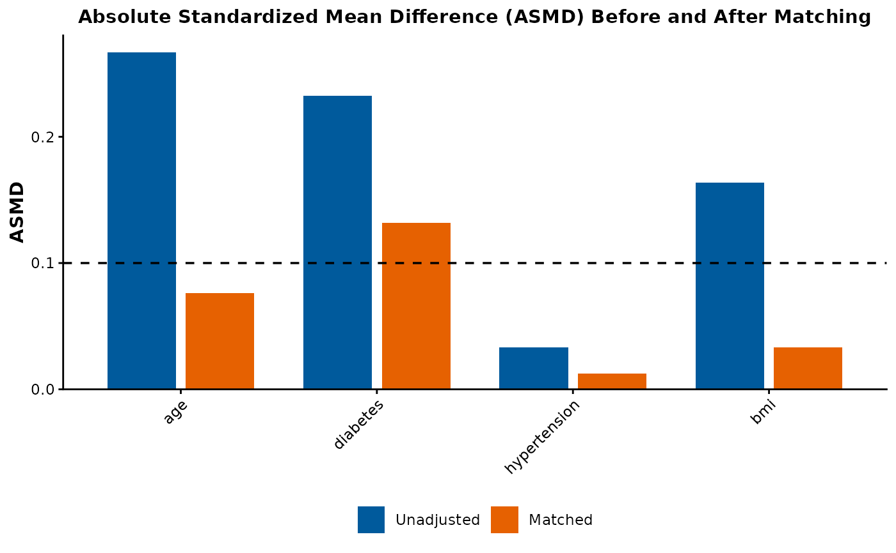

Plot ASMD Balance Across Unmatched and Matched Cohorts
plot_asmd_balance.RdCreates a grouped bar chart comparing the absolute standardized mean difference (ASMD) for each covariate before and after matching.
Usage
plot_asmd_balance(
matching_res,
threshold = 0.1,
title = "Absolute Standardized Mean Difference (ASMD) Before and After Matching",
top_n = NULL
)Arguments
- matching_res
A matching result object: the output of
find_matching_data_summary(), arun_pipeline()result, or anIndepBalanceobject fromcheck_balance().- threshold
Numeric; balance threshold line (default
0.10).- title
Character string for the plot title.
- top_n
Integer; optional. When set, show only the
top_ncovariates (or levels of multi-level categorical covariates) with the largest unadjusted (pre-matching) ASMD, still showing both the unadjusted and matched bars for each. A caption stating how many of the total are shown is added. DefaultNULL: show every covariate — current behavior, unchanged.
Examples
data(example_cohort)
res <- find_matching_data_summary(
example_cohort,
"exposure",
c("age", "diabetes", "hypertension", "bmi")
)
#> Warning: Fewer control units than treated units; not all treated units will get
#> a match.
plot_asmd_balance(res)

plot_asmd_balance(res, top_n = 10)